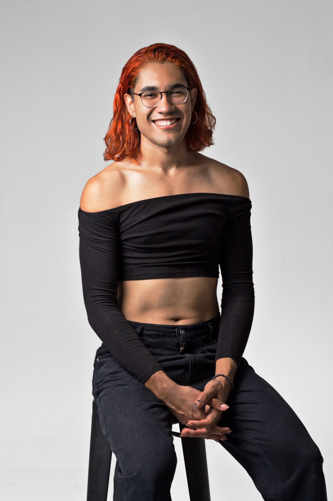

Sobre mí
Storyteller / Gestora cultural

April Cosmic / Tucson, AZ / Ciudad Obregón, SON
Crecí entre los dos lados de una frontera, y eso me dejó una costumbre: fijarme en lo que hay en un lugar y no en el otro.
Casi todo lo que hago empieza ahí, en notar qué falta.
En Obregón faltaban muchas cosas. Lugares para bailar sin pedir permiso. Fotos que desafiaran la captura de la realidad. Conversaciones sobre lo que pasa aquí. Podía esperar a que alguien más las hiciera o irme a buscarlas a otra ciudad. Me quedé e hice lo más que pude.
Mi cabeza funciona así: veo algo, lo desarmo para entender por qué funciona o por qué no, y lo vuelvo a armar distinto. Me pasa con una fiesta, con una marca, con una foto, con la forma en que una escuela se comunica. Analizar es mi deporte favorito, pero no me sirve de nada si no termina en algo que la gente pueda bailar, ver o escuchar.
Por eso no tengo un solo oficio. La DJ lee la pista. La fotógrafa decide qué se queda fuera del cuadro. La comunicóloga piensa cómo llega el mensaje. La Madre piensa en quién sigue después de ella. Es la misma pregunta desde distintos ángulos: qué necesita este momento y cómo lo hago pasar.
Me importa la permanencia. Un ball dura unas horas, una casa dura años. Por eso pienso en sistemas: quién lo sostiene, cómo se cuenta, qué pasa cuando yo no estoy.
Cambio de opinión cuando hay razones, y digo lo que veo aunque no sea lo que se quería oír. Si me invitas a un proyecto, a un jurado o a una mesa, no voy a llegar a aplaudir. Voy a llegar a entender, a hacer la pregunta incómoda y a ayudarte a que la cosa exista.
En el desierto también pasan cosas grandes. Casi siempre porque alguien decidió no esperar.
2026
Figura Clave de la Escena Cultural y LGBT+ de Sonora
Instituto Sonorense de Cultura y Municipio de Hermosillo, mayo
2025
Google Project Management
Professional Certificate, mayo
2019
Premio Binacional Jóvenes con Talento
Gobierno del Estado de Sonora y Estado de Arizona. Primer lugar con un plan de mercadotecnia para Tetakawi Tucson.
Nota en Diario del Yaqui ↗2023
El Presente
Productora / Videoclip para Herman, Placenta
Coordinación general de producción: presupuesto, equipos multidisciplinarios, calendario, logística, planes de trabajo y supervisión en todas las etapas. Coordiné al mismo tiempo dirección de arte, fotografía, maquillaje, vestuario, producción y personal de apoyo.
2022
En El Noro
Editora principal / Serie documental, ocho episodios
Serie sobre expresiones culturales emergentes en Sonora: música, cine, danza, muralismo y skateboarding. Construí la narrativa completa a partir de entrevistas y material documental, tanto la estructura de cada episodio como el hilo que atraviesa la serie. También edité trailers, teaser oficial y versiones para redes.
2021
No Quiero Que Amanezca
Directora, productora, camarógrafa y editora / Videoclip para Sofía Meza
Planeación y ejecución completa: presupuesto, logística, locaciones, recursos, calendario, participantes y supervisión creativa. Mi primera producción liderando a la vez lo creativo y lo operativo.
2019
ANEN
Directora creativa / Proyecto multimedia con la bailarina Cinthia Arreola
Proyecto interdisciplinario sobre las facetas de la feminidad a través de danza, narrativa visual y recursos audiovisuales. Responsable de la conceptualización completa: identidad visual, campaña de comunicación, impresos, contenido digital e interludios multimedia para la función en vivo. Mi primera dirección creativa integral, y la puerta a mi primer trabajo formal en la industria audiovisual.
House of Cosmic, fundadora y productora principal, de 2023 a la fecha. Concepto, planeación, identidad visual, comunicación y producción de eventos multidisciplinarios en distintas ciudades de Sonora, pensados para abrir espacios de expresión, comunidad y participación.
| Evento | Año | Qué hice | Asistencia |
|---|---|---|---|
| Fusión Cósmica: Workshop de Danza | 2025 | Taller itinerante en Obregón, Hermosillo y Navojoa. Diseño, logística y promoción. | 40 en total |
| The Cosmic Renaissance Ball | 2024 | Concepto, dirección creativa, producción, comunicación y experiencia de asistentes. | 150 |
| Super Graphic Ultra Mega Ball with Mich | 2024 | Dirección creativa, producción general, comunicación, talento, jueces y staff. | 150 |
| Fugaz Mini Ball | 2023 | Primer ball de House of Cosmic. Concepto, identidad, difusión y producción. | 120 |
| Conversatorio: Ser Queer en Obregón | 2023 | Diseño y coordinación de un espacio de diálogo sobre experiencias LGBT+ locales. | [asistencia] |
Jueza en balls de otras casas
Cuando me invitan a juzgar, a veces también me toca la música.
| Ball | Ciudad | Fecha | Rol |
|---|---|---|---|
| Palenqueer Kiki Ball | Hermosillo | Agosto 2025 | Jueza y DJ |
| L'Amour Kiki Ball | Hermosillo | Febrero 2025 | Jueza y DJ |
| The Monster Ball | Navojoa | [fecha] | Jueza |
| We Can't Be Friends Ball | Navojoa | [fecha] | Jueza |
| La Feria Mini Ball | Obregón | [fecha] | Jueza |
April Cosmic es storyteller multidisciplinaria y gestora cultural. Nació en Tucson, Arizona, y vive en Ciudad Obregón, Sonora, desde los nueve años. Fundó House of Cosmic, casa pionera del ballroom en el estado, y en 2026 el Instituto Sonorense de Cultura la reconoció como figura clave de la escena cultural y LGBT+ de Sonora. Cocreó y produce el podcast UltraLocal, conduce Jutonio junto a Donny Valenzuela y dirige CosmoMateria.